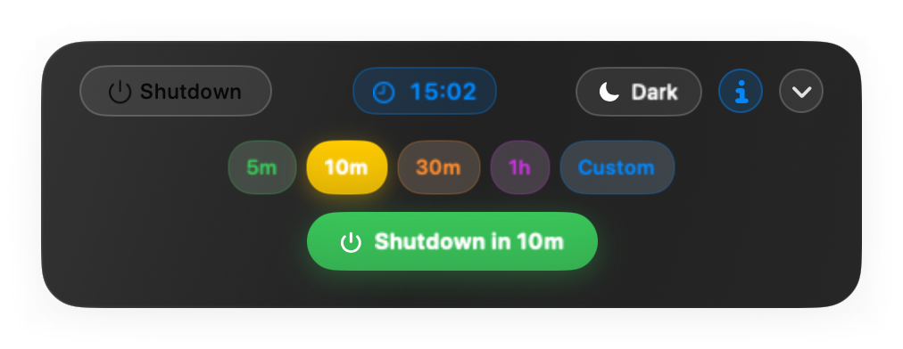
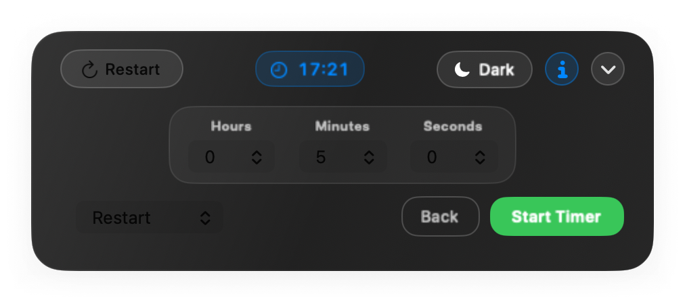
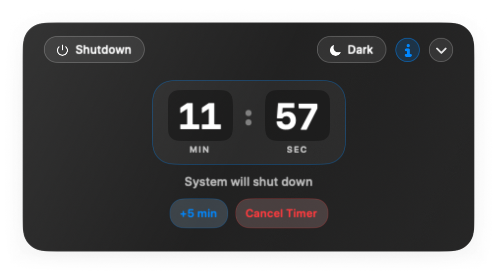
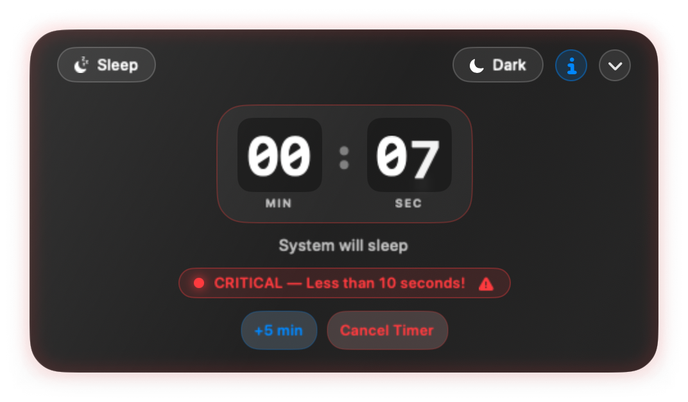
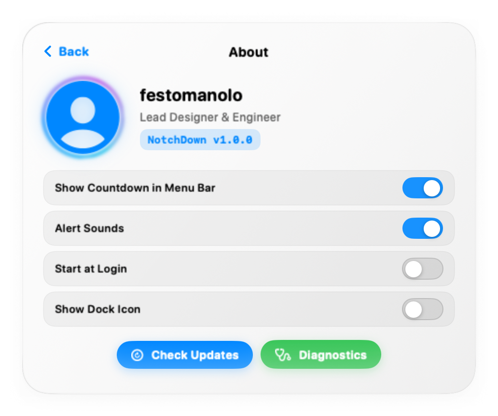
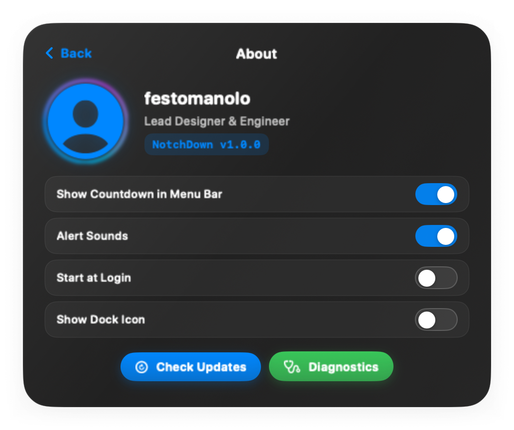

Pick how long. Pick what happens.
Click the pill and it opens. Four presets, an action menu, and a start button that tells you exactly what it is about to schedule — no second guessing which of the four you left selected.


Four actions
Shutdown, restart, sleep, and log out. Sleep goes through IOKit; the rest go through System Events, so macOS closes your apps properly and gives anything with unsaved work a chance to say so.
Change your mind
Add five minutes or cancel outright, from the island or the menu bar. Swipe right across the pill to snooze, left to cancel.
It gets louder as it gets closer.
A countdown you can ignore is a countdown that will surprise you. NotchDown escalates on a fixed schedule, so the last minute is impossible to miss and everything before it stays out of your way.
-
T−10:00
Out of the way
The pill tucks under the notch showing the action and the time left. It peeks out every couple of minutes, then hides again.
-
T−1:00
One minute left
The island drops open on its own, the countdown turns amber, and a chime plays. If you were heads-down in something else, this is the moment you find out.

T−0:10
The last ten seconds.
Red, pulsing, and ticking once a second. The island nudges sideways to catch your eye. Cancel is still one click away — right up until it isn't.

Alert sounds can be turned off. The visual escalation cannot — that is the whole point of it.
Two themes, both finished.
Light mode is not an afterthought with white text left in it. Every control, label and switch was checked against both backgrounds.


Installing it
Two things will happen on first launch that are worth knowing about beforehand, so neither of them looks like something broke.
macOS will refuse to open it the first time
This build is signed but not notarised by Apple, so Gatekeeper blocks it. Right-click the app in your Applications folder and choose Open, then confirm. You only do this once.
It will ask to control System Events
Shutdown, restart and log out are sent through macOS's own automation layer, which needs your permission. Allow it when prompted, or later in System Settings under Privacy & Security, Automation. Sleep works without it.
There is no window and no Dock icon
NotchDown is a menu bar app. After it launches, look for the power icon in the menu bar — that is the whole interface, plus whatever drops out of the notch.